Process是spss中处理中介和调节模型的插件, 我们今天要讲一下process中的model1, 也就是最简单的调节模型, 视频教程已经放在文章末尾。
文章主要使用两种方法进行调节效应的检验, SPSS的回归方法和process的方法。
如果你不关心统计理论, 你可以直接跳转到下面的”SPSS分析过程”。
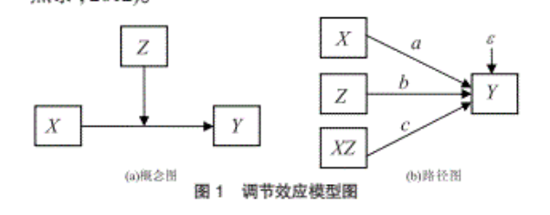上图中, 使用X表示自变量, Z表示调节变量, Y表示因变量, XZ表示自变量和调节变量的乘积。
使用Spss可以做调节效应分析吗? 当然可以! 而且你不需要任何插件就可以做, 具体做法是这样的流程:
- 将自变量和调节变量进行中心化
- 计算自变量和调节变量的乘积
- 使用回归检验一下方程中系数c的显著性:
$$ Y = i + aX + bZ + cXZ + e $$
具体做之前需要先回答两个问题:
- 1.为什么要中心化?
- 2.为什么乘积项的系数显著就可以证明存在调节效应?
为什么要中心化
温中林在他的论文《基于多元回归的调节效应分析》已经讲的很清楚, 因为中心化以后, 回归系数a和系数b的意义更加明确, 因而spss的回归结果更易于理解! 并且他还在文章中说, 我们以前以为中心化是为了降低变量之间的共线性, 这只降低了非本质的共线性, 也对回归结果没有本质影响, 因而不能当作我们变量中心化的理由。
也就是说, 中心化强制的将调节变量X的均值设置为0, 当Z为均值时, 回归方程变为我们最常见的多元回归形式:
$$ Y = i + aX + e $$
这时候a的意义就是: 当调节变量取均值时的回归系数。这时候如果SPSS的计算结果显示系数a显著不为0, 说明当Z为均值时, X对Y有影响。
如果我们没有将变量进行中心化, 那么我们只能将方程写为:
$$ Y = i + (a+\bar Z)X + b \bar Z + e ; (\bar Z ≠ 0) $$
为什么乘积项的系数显著就可以证明存在调节效应
我们可以对比一下系数c显著和不显著的两种方程, 注意c显著意思就是统计上不为0。
当c≠0显著时, 方程如下, 实际上a+cZ就是以X为自变量, 以Y为因变量的回归方程的斜率, c不为0, 说明斜率会因为Z的改变而改变:
$$ Y = i + (a+cZ)X + bZ + e $$
当c=0时, 方程如下, 也就是说Z的变化只引起了方程的截距的改变, 但是并没有影响方程的斜率:
$$ Y = i + aX + bZ + e $$
SPSS分析过程
上面已经介绍了主要流程, 下面再细说一下:
- 计算自变量和调节变量的均值和标准差
- 中心化
- 求乘积
- 做两个回归模型
计算自变量和调节变量的均值和标准差
使用描述统计:
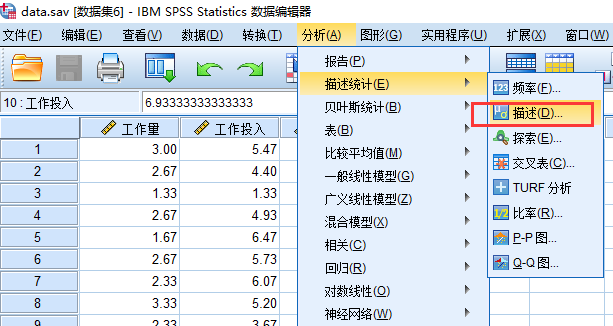设置如下:
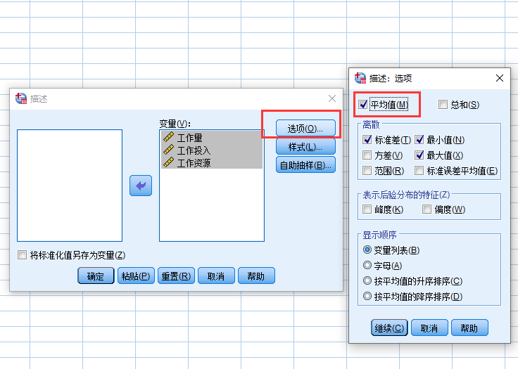
输出结果:
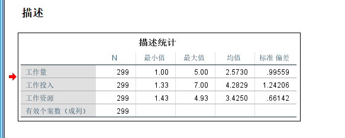
中心化变量
计算变量的功能在这里:
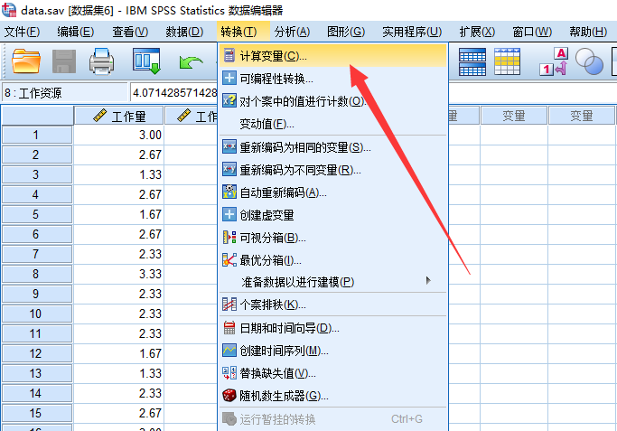让变量减去平均值即可, 注意生成新的变量用”M”打头:
计算交互项(乘积)
注意交互项的变量名要体现他时谁跟谁的乘积。
最后你计算一下各个变量的均值, 看是否如你所愿:
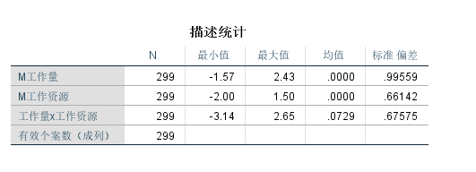做回归
我们需要做如下两个回归:
$$
𝑌=𝑖+𝑎𝑋+𝑏𝑍+𝑒
𝑌=𝑖+𝑎𝑋+𝑏𝑍+𝑐𝑋𝑍+𝑒
$$
他们的区别仅仅是第二个模型增加了交互项, 具体步骤如下:
Step1: 菜单
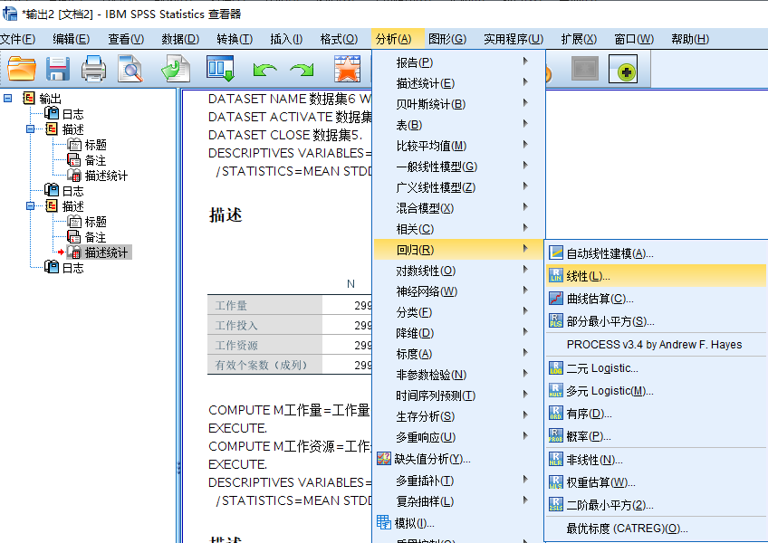Step2:第一个回归模型
Step3:第二个回归模型
Step4:配置选项
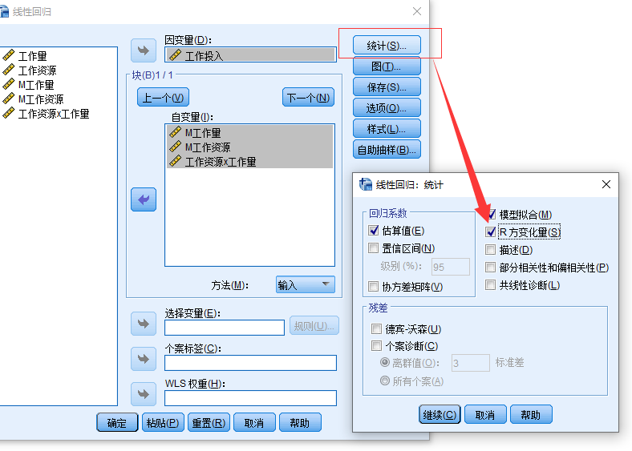Step4:输出结果
首先看R方的改变量, 从Model1到Model2, R方改变量是显著的, 说明增加交互项可以提高回归模型的拟合度。
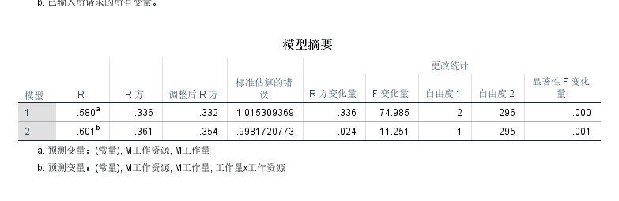再看交互项的系数是显著的, 证明调节作用显著。
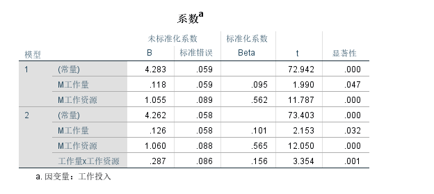Process做简单交互效应
Process能帮助你更快的检验交互效应, 因为它自动化处理了上面的过程, 下面我们来演示一下如何使用Process插件:
操作方法
找到process菜单:
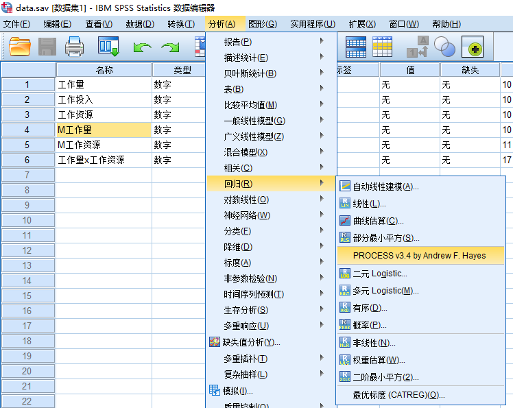设置变量:
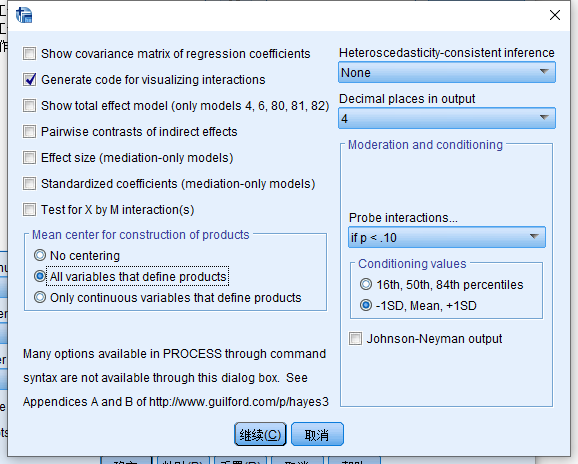配置参数:
注意我们勾选了一下两个选项:
- Generate code for visualizing interactions(生成可视化交互效应的代码)
- all variables that define products(变量中心化处理)
并且, 我们希望计算调节变量在三个点值(conditioning values)时回归方程的参数,
这三个点可以时百分位数, 也可以是标准差为单位的三个值, 我们更倾向于选择后者。
结果解读
主要看下面两个结果, 首先是交互项(Int_1)的系数是否显著, 下面的结果是显著的;
然后看R方的改变量, 这个值从模型1到模型2改变了0.024, 这与上面使用SPSS的回归方法计算的值一模一样。
接下来我们可以看到调节变量(工作量)取三个值(负一个标准差/均值/正一个标准差)时回归方程的斜率(自变量的系数):
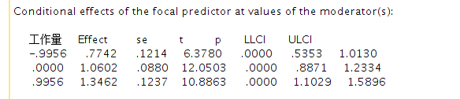结果可视化
最后我们使用process提供的数据进行可视化绘图, 这个数据有3列, 第一列是工作资源的三个值(分别是均值和它上下一个标准差), 第二列是工作量的三个值(分别是均值和它上下一个标准差), 最后一列是在工作起源和工作量在不同值时计算得到的工作投入的值。
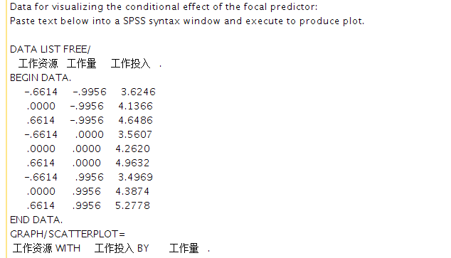我们将这些数字贴到excel, 经过整理就可以绘制得到一个调节效应的可视化折线图:
注意, 整理过程中, 我们将自变量和调节变量的三种值都进行了命名, 名字为两个字母, 第一个字母表示自变量(X)或者调节变量(M),
第二个字母表示均值(M), 均值以上一个标准差(H), 均值以下一个标准差(L)。
可视化工具
根据下面的公式, 我们来对号入座的填入数据, 这样就可以可视化我们的交互效应。
$$ 𝑌=𝑖+𝑎𝑋+𝑏𝑍+𝑐𝑋𝑍+𝑒 $$
a =
b =
c =
自变量名称、均值和标准差 =
调节变量名称、均值和标准差 =
Process快捷可视化
我们将process生成的可视化代码, 粘贴到下面的文本框, 就可以自动可视化:
总结
- 我们这篇文章介绍了两种方法来检验调节效应, 两种方法本质上都是做了两次回归, 结果也是一样的。
- Process的好处是大大简化了我们的操作步骤
视频教程
注意
本文由jupyter notebook转换而来, 您可以在这里下载notebook
统计咨询请加QQ 2726725926, 微信 mllncn, SPSS统计咨询是收费的
微博上@mlln-cn可以向我免费题问
请记住我的网址: mlln.cn 或者 jupyter.cn